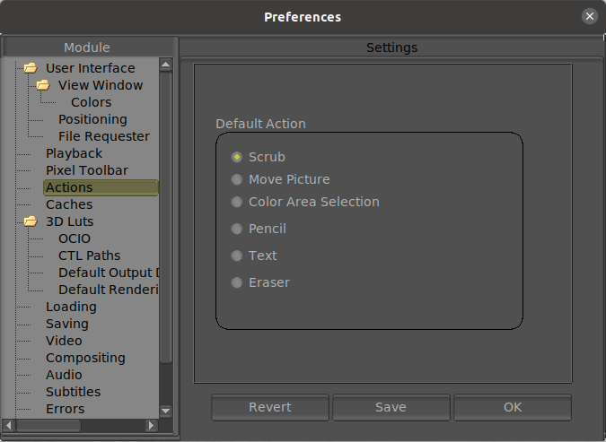

|  |
Sets scrubbing as the default action. Sets move/scale the picture as the default action. Sets the color area selection as the default action. Sets the pencil drawing tool as the default action. Sets the text drawing tool as the default action. Sets the eraser drawing tool as the default action. |